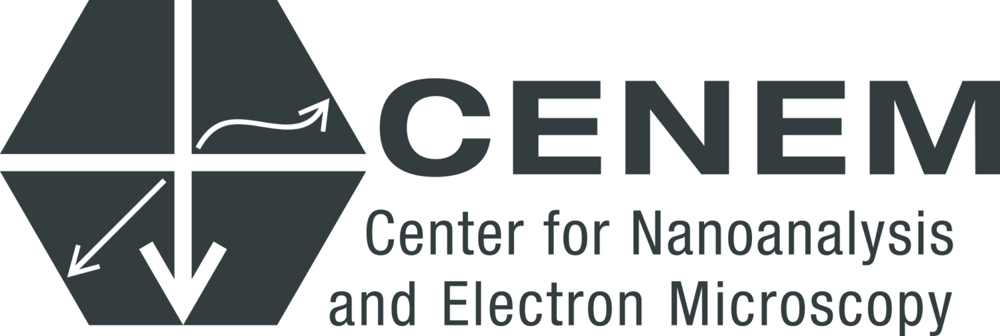
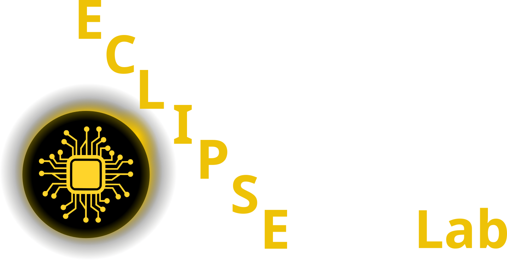
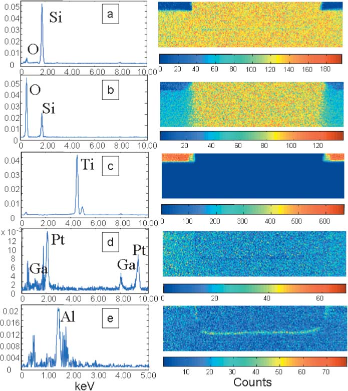
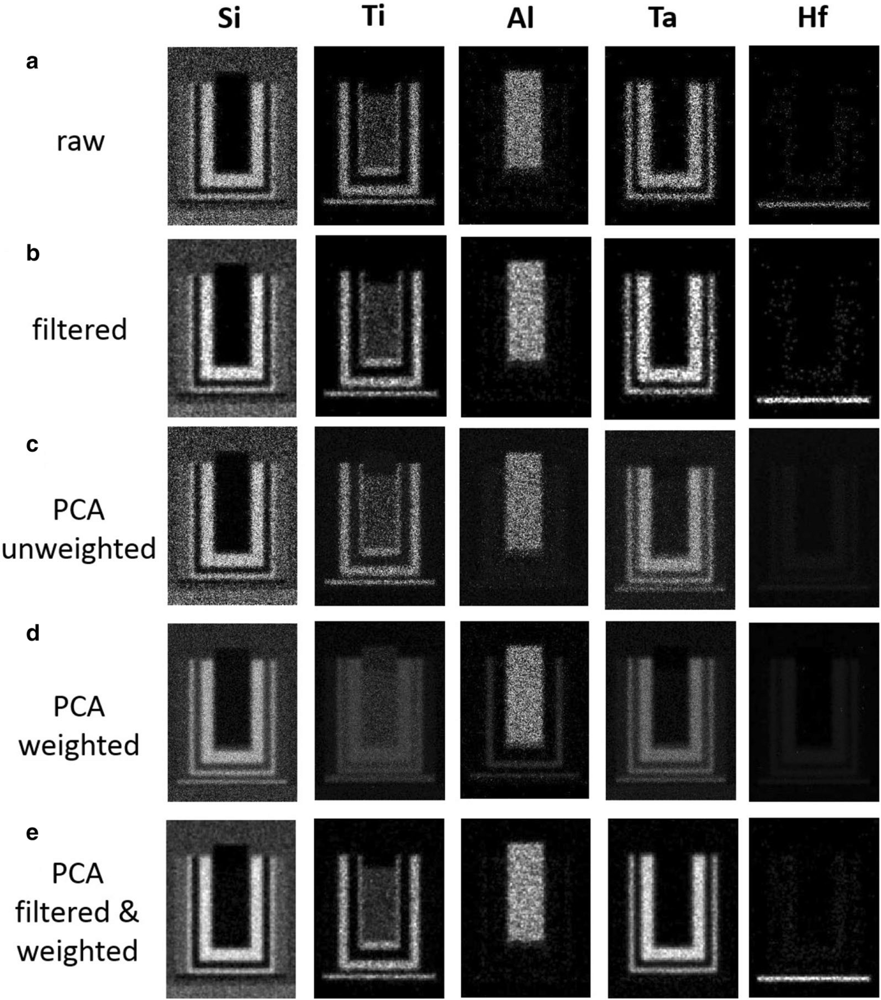
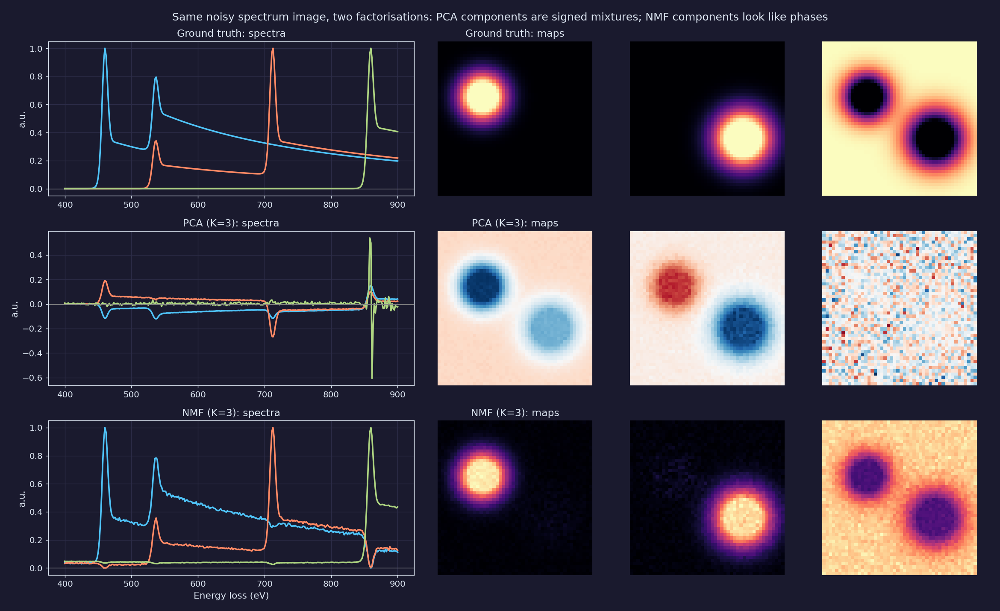
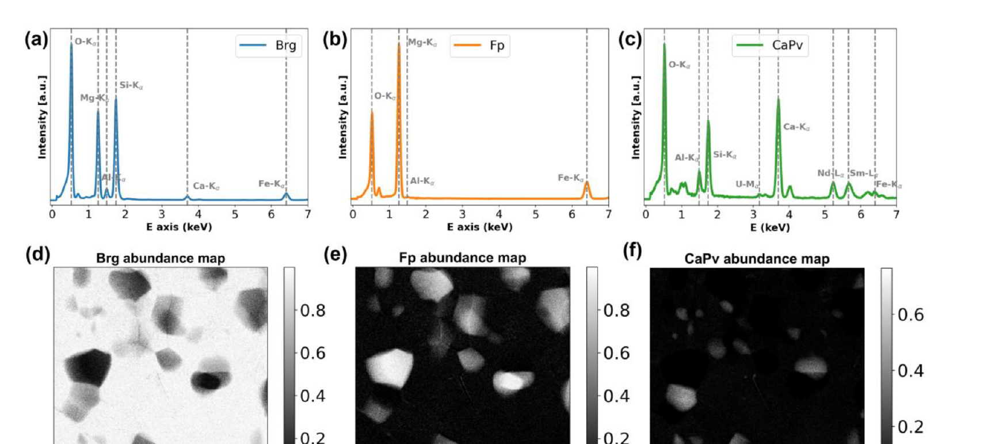
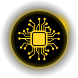

Data Science for Electron Microscopy
Week 3: Linear algebra, PCA & spectral unmixing
FAU Erlangen-Nürnberg
Institute of Micro- and Nanostructure Research


Three numbers you will understand today
Week 2: the noise model decides the loss. Today: the same rule decides how we factorise a spectrum image, and every example is real data.
58
counts per pixel in a real EDS map, and still a clean phase map
→ Act 4 · PCA
0.96
correlation of a “component” with the energy drift of the spectrometer
→ Act 4 · PCA
∞
unmixings that fit the data exactly equally well
→ Act 6 · Trust
Today’s red line: from a datacube to a phase map you can trust
Act 1 · Vector
When are two spectra alike?
A spectrum is an arrow. Similarity is an angle.
Projection onto references: how much Fe³⁺?
Act 2 · Matrix
How does a datacube become a matrix?
A spectrum image is a matrix: rows are pixels, columns are channels
X = cube.reshape(ny * nx, ne) — every method today factorises this X ≈ (maps) × (spectra).
Least squares is a projection: the power-law background
Act 3 · SVD
What does any matrix do to space?
Every matrix rotates, stretches, rotates: A = UΣVᵀ
The best rank-k image: Eckart–Young
Act 4 · PCA
How many things vary?
PCA turns the direction v until the variance is largest
PCA = SVD of the centred data matrix
Centre
\(\tilde{\mathbf X}=\mathbf X-\mathbf 1\bar{\mathbf x}^{T}\)
remove the mean spectrum
Decompose
\(\tilde{\mathbf X}=\mathbf U\boldsymbol\Sigma\mathbf V^{T}\)
\(\lambda_k=\dfrac{\sigma_k^2}{N-1}\)
Read off
loadings \(\mathbf v_k\) (spectra)
scores \(\mathbf t_k=\tilde{\mathbf X}\mathbf v_k\) (maps)
\(\hat{\mathbf X}_K=\bar{\mathbf x}+\textstyle\sum_{k\le K}\mathbf t_k\mathbf v_k^{T}\)
Eigenspectra and score maps are signed
58 counts per pixel, yet a clean map: PCA pools the pixels
Weight the counts before PCA
A derivative-shaped component means drift, not chemistry
Act 5 · Unmix
What are the things?
Every pixel is a mixture: the simplex
\(\mathbf x_i \approx \sum_k a_{ik}\,\mathbf m_k\), \(a_{ik}\ge 0\), \(\sum_k a_{ik}=1\) → \(\mathbf X\approx\mathbf A\,\mathbf M\), both \(\ge 0\)
NMF: a factorisation with only non-negative parts
Model
\(\mathbf X\approx\mathbf W\mathbf H\)
\(\mathbf W\in\mathbb R_{\ge0}^{N\times K}\) maps, \(\mathbf H\in\mathbb R_{\ge0}^{K\times D}\) spectra
Loss = noise model
Gauss: \(\lVert\mathbf X-\mathbf{WH}\rVert_F^2\)
Poisson: \(\sum x\log\frac{x}{(\mathbf{WH})}-x+(\mathbf{WH})\)
Multiplicative update (KL)
\(\mathbf H\leftarrow\mathbf H\odot\dfrac{\mathbf W^{T}(\mathbf X/\mathbf{WH})}{\mathbf W^{T}\mathbf 1}\)
\(\mathbf W\leftarrow\mathbf W\odot\dfrac{(\mathbf X/\mathbf{WH})\,\mathbf H^{T}}{\mathbf 1\,\mathbf H^{T}}\)
No subtraction is possible, so the components can only add up: parts, peaks, phases Lee, Daniel D. et al., (1999), doi:10.1038/44565. KL-NMF is maximum-likelihood unmixing of counts.
Watch NMF learn the phases
Same factorisation, other data: 4D-STEM diffraction
MCR-ALS: the constraints are the science
\(\mathbf X=\mathbf C\mathbf S^{T}+\mathbf E\): alternate two constrained least-squares problems.
- Fix \(\mathbf S\), solve for \(\mathbf C\ge 0\) (+ closure).
- Fix \(\mathbf C\), solve for \(\mathbf S\ge 0\) (+ known spectra).
- Repeat until the residual stops falling.
NMF = MCR with non-negativity only. Each extra true constraint shrinks the set of valid answers.

Act 6 · Trust
When is the phase map lying?
The same fit, many answers: rotational ambiguity
The scree plot hides a rare phase; the residual map shows it
Overlapping peaks: κ amplifies the noise
Choosing the decomposition
| Question | Method | Constraint | Unique? | Check |
|---|---|---|---|---|
| How many things vary? Denoise | PCA / SVD, Poisson-weighted | orthogonal, variance-ordered | yes (± sign) | scree after weighting, residual map |
| Which phases, references known | NNLS / FCLS (projection) | \(\mathbf a\ge 0\), \(\sum a=1\) | yes | structured residual → missing reference |
| Which phases, spectra unknown | NMF (KL for counts) | \(\mathbf W,\mathbf H\ge 0\) | no | restarts, pure pixels, feasible band |
| + physical knowledge | MCR-ALS, physics-guided NMF | + closure, known spectra, selectivity | ≈, if enough | the constraints must be true |
| Overlapping signals | any least-squares fit | — | yes, but unstable | condition number κ |
| Discrete phases / curved data | clustering, autoencoders (Week 9) | labels / learned non-linear | no | mixed pixels, validation |
The red line, complete
Must-know for the exam
1 Projection onto â: c = âᵀb. Least squares = projection: Xᵀ(y − Xŵ) = 0.
2 SVD: A = UΣVᵀ (rotate, stretch, rotate). ‖X − Xₖ‖²_F = Σⱼ>ₖ σⱼ² (Eckart–Young).
3 PCA = SVD of the centred data; λₖ = σₖ²/(N−1). Scores and loadings are signed.
4 PCA denoises: signal low-rank, noise full-rank. Poisson-weight counts before PCA.
5 A derivative-shaped loading signals an energy shift. Align before you decompose.
6 NMF: X ≈ WH, W, H ≥ 0. KL-NMF = Poisson maximum likelihood.
7 NMF / MCR are not unique: WH = (WT)(T⁻¹H). Constraints reduce the ambiguity.
8 Truncation removes low variance, not unimportant signal: read the residual map. κ = σ_max/σ_min.
Self-study this week
Notebook: notebooks/week03_pca_nmf_eels.ipynb — “PCA vs NMF on a spectrum image”
- Part A: PCA denoising of an EELS line scan: SVD, scree, the U-shaped error curve.
- Parts B–C: a 3-phase spectrum image with known ground truth: PCA vs NMF, matched to the truth.
- Part D: write the multiplicative updates yourself; break NMF by removing the pure pixels.
Explore the real data: every explainer in this deck runs on open data. Open the deck, press the buttons, and try to break each method.
CPU only; under five minutes. NumPy, SciPy, matplotlib, scikit-learn.

- Data sets (CC BY 4.0): STEM-Bank-26 Hollyer, George et al., (2026), doi:10.48550/arXiv.2610.36086; Cymes et al. Cymes, Brittany A. et al., (2023), doi:10.1111/maps.13941; pyxem SPED demo data Martineau, Ben H. et al., (2019), doi:10.1186/s40679-019-0063-3.
- Must-know review: exam_mustknow.md, Week 3.
- Miniproject: teams with spectral data use the pipeline preprocess → weighted PCA → NMF → residual check.
Next week: regression, optimisation & honest validation
Least squares was a projection today. Next week it becomes learning: gradient descent, ridge for ill-conditioning, and validation that does not leak.
- Linear regression as projection; gradient descent, SGD, Adam on the same loss.
- Ridge and lasso: the cure for today’s large κ, and their geometry.
- Honest validation: train / validation / test, GroupKFold by specimen; fit every preprocessing step (scaling, PCA) inside the training fold.
Continue
Backup slides
Material outside the 90-minute path, for questions and self-study.
Weighting and truncation in practice

- EDS counts are sparse (often < 1 count per channel per pixel). Without weighting, PCA mainly models the bremsstrahlung and the bright lines.
- Potapov & Lubk derive the optimal truncation rank from the noise statistics Potapov, Pavel et al., (2019), doi:10.1186/s40679-019-0066-0.
- Recipe: weight → PCA → K where the eigenvalues leave the flat floor → reconstruct → un-weight.
- Record weighting, K and software version (Week 2, FAIR).
PCA vs NMF with a known ground truth

Synthetic 3-phase spectrum image (TiO₂-like, FeO-like, Ni) with Poisson noise. Top: truth. Middle: PCA (K = 3), signed difference spectra and maps; PC3 is noise because sum-to-one removes one dimension after centring. Bottom: NMF (K = 3), phase-like spectra and non-negative maps (img/make_figures.py).
Case study: NMF-aided phase unmixing of STEM-EDXS
- Lower-mantle assemblage from a diamond-anvil cell: bridgmanite, ferropericlase, Ca-perovskite, with trace Nd/Sm/U Chen, Hui et al., (2024), doi:10.1016/j.ultramic.2024.113981.
- Phases share X-ray lines and mix below the pixel scale.
- NMF (K = 3) → phase spectra + maps → constrained least squares → quantification. Trace Sm detected at tens of ppm.
- Next step: physics-guided NMF with Poisson loss Teurtrie, Adrien et al., (2024).

The covariance matrix: where geometry meets statistics
- \(\mathbf S=\frac{1}{N-1}\tilde{\mathbf X}^{T}\tilde{\mathbf X}\in\mathbb R^{D\times D}\): \(S_{jj}\) = variance of channel \(j\), \(S_{jk}\) = covariance of channels \(j\) and \(k\).
- The level set \(\mathbf x^{T}\mathbf S^{-1}\mathbf x=1\) is an ellipsoid; its axes are the eigenvectors of \(\mathbf S\), its semi-axes \(\sqrt{\lambda_k}\).
- \(\tilde{\mathbf X}=\mathbf U\boldsymbol\Sigma\mathbf V^{T}\Rightarrow\mathbf S=\mathbf V\frac{\boldsymbol\Sigma^2}{N-1}\mathbf V^{T}\): PCA directions = right singular vectors.
- \(\mathbf S\) is \(D\times D\) (512 × 512 for today’s EELS), not \(N\times N\); SVD never forms it.
Ill-conditioning: a quick diagnostic
- Compute
np.linalg.cond(X)on the standardised design matrix. Above ~10³, coefficients are unstable. - Standardise features with different units first; otherwise κ is artificial.
- Add independent information: more lines, better resolution, a known component.
- Regularise (ridge, Week 4) or project onto the top singular vectors.
References

©Philipp Pelz - FAU Erlangen-Nürnberg - Data Science for Electron Microscopy